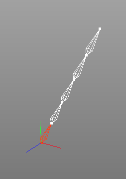
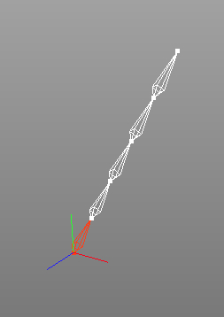

ジョイント分割
ジョイント分割は、ジョイントを分割するために使用できます。スプライン IKを使って、動物のしっぽを動かしたいような、等間隔に並んだジョイントの長い階層を作りたい場合に特に役立つでしょう。
 

左のイメージでは、２つのジョイントで１つのボーンが作成されています。
次のイメージでは、ルートジョイントに続くボーンは５個に分割されています。
編集モード
このツールは、全てのモードで同じように動作します。


ジョイント分割ツールを使用するには、まず分割したいボーンのルートジョイントを選択します。そして、"ツール キャラクターツールジョイント分割" をメニューから選択します。ツールビューにのプロパティが表示されるので、任意のプロパティをセットします。OK ボタンをクリックすると、選択されているジョイントに分割が適用されます。
キャラクターツールジョイント分割" をメニューから選択します。ツールビューにのプロパティが表示されるので、任意のプロパティをセットします。OK ボタンをクリックすると、選択されているジョイントに分割が適用されます。
補助キー
-
- なし
プロパティ
- 分割数: 選択しているジョイントが分割される数を決定します。
- 適用: OK ボタンをクリックしてジョイント分割を実行します。